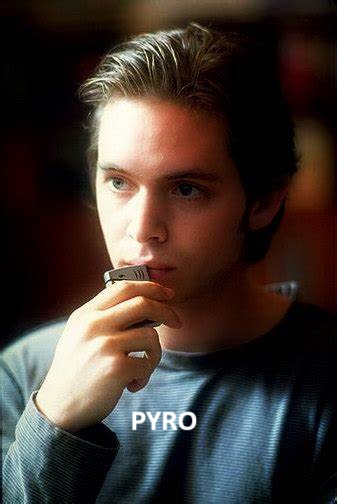
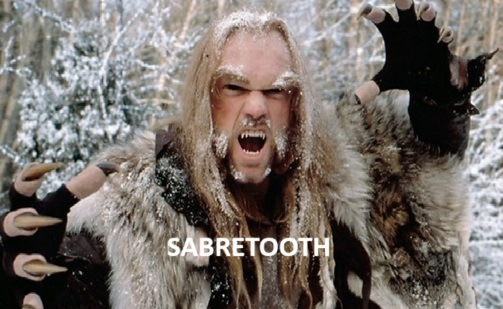
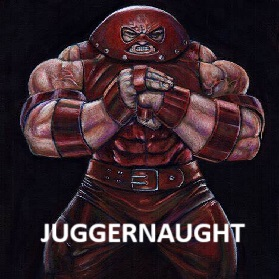
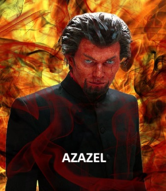
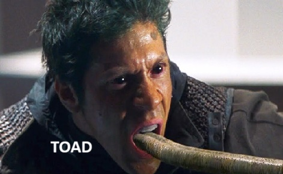
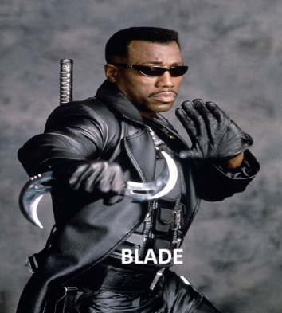
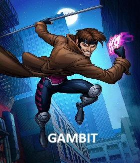
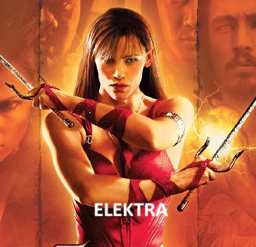
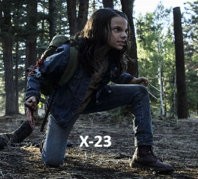
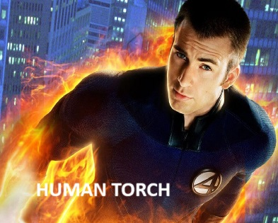

Welcome to my page I have created to give my review on the recent Deadpool & Wolverine movie. I Hope you enjoy!
Deadpool & Wolverine is the third movie in the Deadpool franchise and it's the first time that Deadpool has been introduced into the Marvel Cinematic Universe (MCU). The team-up between Deadpool and Wolverine has long been teased throughout the Deadpool franchise with constant quotes and references in the first two movies. There were many rumours that Deadpool would be entering the MCU after the end of the infinity saga (phrase 3), in January 2021 it was confrimed that Deadpool would be introduced into the MCU. It was not until September 2022 that Wolverine was confrimed as being part of the film, this was after a phone call between Hugh Jackman and Ryan Reynolds to discuss the idea, with Hugh Jackman coming out of retirement from playing Wolverine.
When Deadpool learns that the Time Variance Authority (TVA) are planning to end his Universe he must do everything he can to save it, this means teaming up with a reluctant Wolverine from another Universe.
After finding themselves in the Void and after a few disagreements (and intense figths) the pair must find a way to get back to Deadpools Universe to stop the TVA, a task which they cannot do alone.
As expected with a Deadpool film there are alot of Comedy moments and plenty of 'Fourth wall' breaks. There are plenty of returning characters from the first two films as well as many cameo appearences.
Below is a list of some of the cast members of the film
Click on the names below for more information about the actor










There was also some cameo appearences as Deadpool variants which include: Blake Lively as Ladypool, Ryan and Blakes children as Kidpool and Babypool and Paul Mullin (footballer from Wrexham A.F.C) as Welshpool
There was also a special appearence from Henry Cavill (who played Superman in the DC Universe) as the Wolverine variant 'Cavillrine'.
I absolutely loved this film, the opening credits had me in stitches and the comedy element of the film continued right throughout. The story was not one of the best that Marvel has produced but for me this film was all about giving the feel-good factor back to the Marvel fans after some of the disappointments of recent movies.
It would have been nice to see abit more of the characters from the previous two Deadpool films however it did allow for the cameo appearences to work better. I thought the writing was brilliant to allow the cameo appearences to work well with the storyline and the screentime afforded to them was well worked.
In conclusion i would say this is one of the best movies Marvel has produced in recent years, it was full of laughs, action sequences and a few heart felt moments. The cameo appearences payed homage to some of the characters of some of the first Marvel movies which were not involved in the MCU timeline.
This is a movie i know i will watch over and over again and i sincerly hope the 'Merc with a mouth' will be back on the screens sooner rather than later.
Thank you for reading and i hope you've enjoyed my review